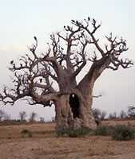
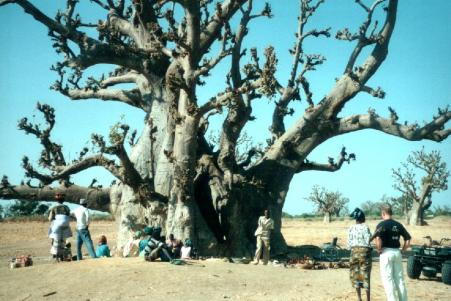
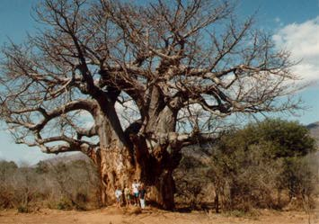
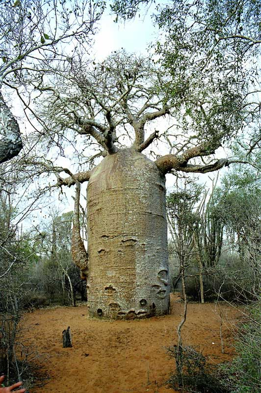
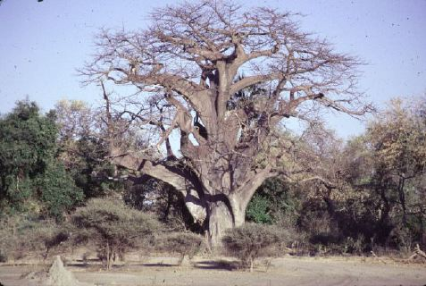

बहुत दिनों के बाद एक बार फ़िर लेकर आ रहा हूँ चित्र पहेली! हाँ तो मित्रो यहाँ प्रस्तुत है दुनियाँ के सबसे अजीब वृक्ष के कुछ चित्र जो भारत में बहुत कम पाये जाते हैं, ( मेरी दृष्टि में इसके भारत में सिर्फ़ तीन पेड़ है और वह तीनों ही सुरत ( गुजरात में) में है। चुँकि यह पेड़ भारत के अन्य प्रदेशों में नहीं पाया जाता है, इस लिये इस का हिन्दी में नाम भी पता नहीं है, पर गुजराती में इसे ” गोरख आंबली“ कहा जाता है। यह वृक्ष अफ़्रीका में बहुतायत पाये जाते हैं।
शायद इस वृक्ष को हमारे चिट्ठाकारों के समूह में डॉ सुनील जी एवं मेरे सिवाय किसी ने नहीं देखा होगा पर इस बारे में अगर पढा़ हो तो दौड़ायें दिमाग। और हाँ इस वृक्ष की विशेषतायें इतनी कि गिनना मुश्किल! इस वृक्ष केलगभग 1800 से 2000 उपयोग हैं।
तो बताईये मित्रों इस वृक्ष का नाम क्या है और इस की विशॆषताएं क्या है?




